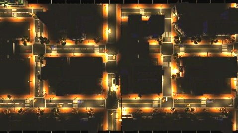

En Arequipa, muchas personas enfrentan situaciones de robo urbano sin preparación adecuada. Se identificaron 4 patrones de reacción desadaptativa:
Estas reacciones aumentan el riesgo y pueden llevar a decisiones peligrosas en situaciones reales.
SECUREPLAY VR es un simulador inmersivo que entrena la respuesta de huida en un entorno seguro y controlado.

Permite practicar sin riesgo real, recibir retroalimentación inmediata y mejorar progresivamente las habilidades de reacción.
Desarrollar una interfaz VR que permita entrenar la gestión de respuesta de huida (flight) ante situaciones de robo urbano, fortaleciendo la toma de decisiones seguras y reduciendo impulsividad, bloqueo y mala elección de rutas bajo estrés.

Adaptado a 4 tipos de reacción de huida identificados mediante investigación exhaustiva con usuarios reales.
Práctica sin riesgo físico real, permitiendo cometer errores y aprender sin consecuencias.
Métricas en tiempo real: tiempo de reacción, decisiones tomadas y rutas seleccionadas.
Calles urbanas peruanas auténticas con señales visuales, auditivas y contextuales.
Entrenamiento escalable desde escenarios simples hasta situaciones complejas.
Diseño fundamentado en needfinding, análisis de usuarios y principios de IHC.
Entrevistas presenciales y observación de usuarios para identificar patrones reales de reacción ante robos urbanos.
Clasificación de 4 perfiles de huida: impulsiva, mínimo control, controlada y bloqueo inicial.
Diseño de metáforas y flujos VR aplicando heurísticas de Nielsen adaptadas a situaciones de estrés.
Implementación de escenarios urbanos inmersivos con señales visuales, auditivas y temporales.
Evaluaciones presenciales, registro de feedback y ajustes iterativos basados en comportamiento real.
Registro real de interacción de usuarios en entorno VR
Desarrollo & Diseño
Investigación & UX
Análisis & Testing
Diseño & Prototipado
Proyecto de Interacción Humano Computador
UNSA — Ciencia de la Computación